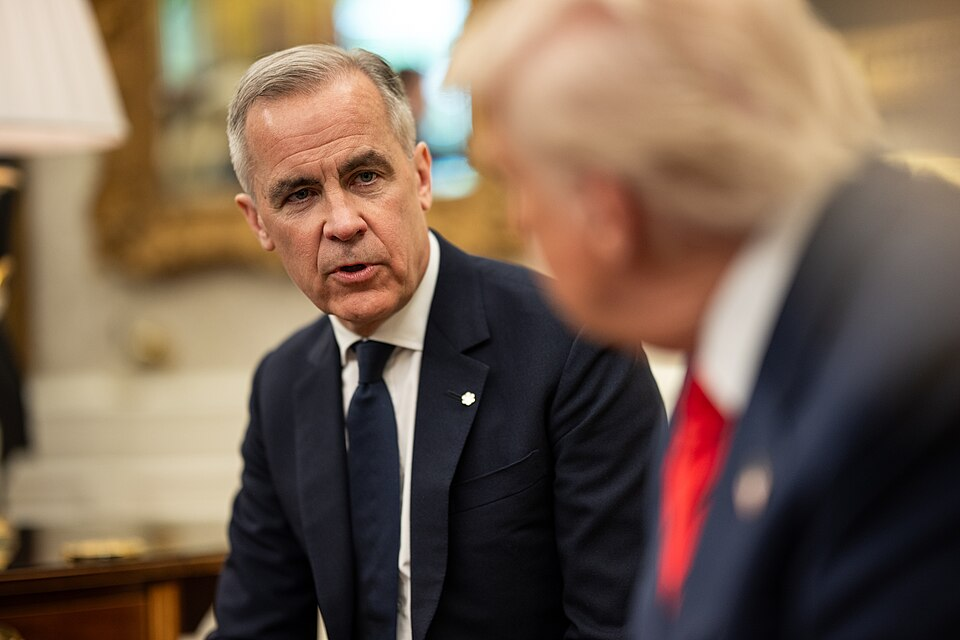
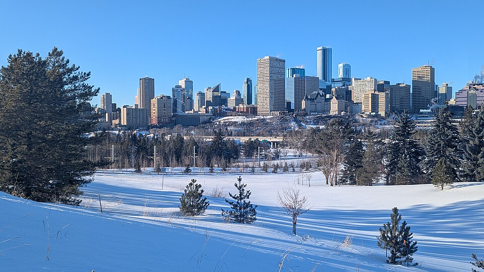
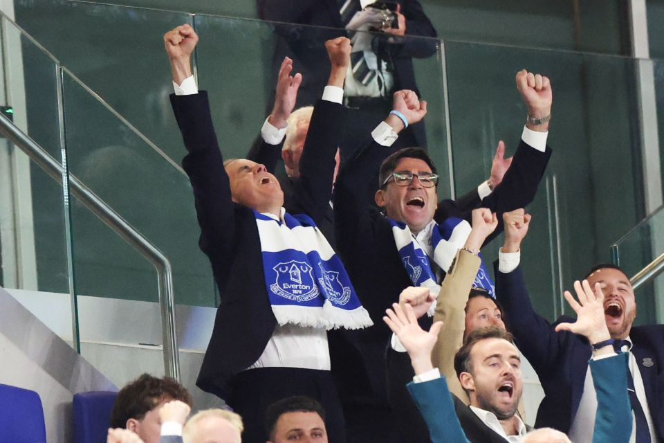

Los habitantes de la provincia de Alberta han rechazado realizar un referéndum para su independencia. Con más del 76% de los votos, la reafirmación de la unidad de Canadá da otra gran victoria al primer ministro liberal Mark Carney que celebró el resultado a través de las redes sociales: “Por encima de todo, los albertanos eligen Canadá”.
En un país que hace solo dos años parecía ingobernable, un hombre ha conseguido crear una unidad pocas veces vista alrededor de una bandera: Donald Trump. Su guerra comercial, sus amenazas de anexión y su apoyo a los movimientos independentistas no han conseguido más que reforzar al gobierno federal hasta cotas históricas.
Alberta independiente
El reto independentista comenzó en mayo de este año, cuando el grupo Stay Free Alberta logró conseguir las firmas suficientes para provocar un proceso de secesión. La organización consideró que el gobierno federal no atiende a las necesidades de Alberta y esta aporta más de lo que recibía. Por ello, este movimiento considera que es necesario la independencia de la provincia.
Alberta es el principal productor de petróleo de Canadá, país que es a su vez el cuarto productor del mundo. En 2025, la provincia produjo alrededor del 84% del petróleo del país. Esta importante industria ha convertido a Alberta en la provincia con menor tasa de pobreza (según la medida de bajos ingresos) y una de las provincias con mayor Producto Interior Bruto per cápita. Sin embargo, también ha provocado constantes choques con el gobierno federal y sus propuestas de protección medioambiental y de lucha contra el cambio climático, especialmente cuando gobiernan los liberales. Eso explica por qué desde 1921 la provincia ha sido gobernada por partidos conservadores, con la única excepción de la legislatura 2015-2019 cuando gobernó el socialdemócrata NDP.
Sin embargo, el sentimiento independentista no ha conquistado a la población. Según las encuestas, solo un cuarto de la población está a favor de la secesión mientras que el gobernante UCP está dividido entre sus partidarios independentistas y federalistas. Además, este es un momento especialmente malo para intentar este desafío. Como expuso Mark Carney, la votación se ha llevado a cabo “en el peor momento posible”.

El primer ministro canadiense, Mark Carney, junto al presidente estadounidense, Donald Trump
Fuente: The White House
Donald Trump, enemigo número uno
A día de hoy hay tres factores por los que los movimientos separatistas canadienses están en horas bajas, y todos tienen un nexo en común: el presidente de los Estados Unidos.
La mañana de Reyes de 2025 trajo el mejor regalo para los conservadores canadienses: el primer ministro Justin Trudeau dimitió pocos meses antes de las elecciones federales. El político liberal abandonó el poder debido a su gran impopularidad que iba a provocar una derrota histórica: en ese momento los conservadores sacaban hasta 27 puntos de ventaja en las encuestas a los liberales. Mark Carney recogió el relevo que nadie quería y se convirtió en el nuevo primer ministro con una hecatombe en el horizonte. Sin embargo, la alegría conservadora duró apenas 24 horas.
El 7 de enero, Donald Trump aseguró que usaría la “fuerza económica” para convertir a Canadá en el estado número 51. Esta declaración fue precedida por un mes en el que el presidente electo estadounidense comentó que el país “debería considerar” unirse a Estados Unidos. Una vez Trump fue inaugurado como presidente, las amenazas subieron de categoría. En el discurso inaugural aseguró que “le gustaría” anexionar Canadá en sus primeros 100 días de presidencia e impuso unos aranceles del 25% sobre el país vecino. La forma de evitar esas medidas, aseguró, era convertirse en el estado 51.
La respuesta canadiense fue airada. Aún a la espera de un sustituto, Trudeau replicó los aranceles y aseguró que no existía “la más mínima posibilidad de que Canadá se convierta en parte de Estados Unidos”. Por su parte, la población, que entre un 80% y un 90% rechazaba la idea, empezó a boicotear productos estadounidenses, convirtió en éxito una gorra roja (al estilo MAGA) con las palabras “Canadá no está en venta” y empezó a abuchear el himno vecino en los eventos deportivos.
Todo esto, que desde diversos sectores canadienses se ha catalogado de interferencia extranjera, ha creado la sensación de que apoyar la independencia de las regiones es hacerle el juego a una potencia que quiere crear inestabilidad en Canadá para anexionarla
Por el contrario, a Pierre Poilievre, el líder de los conservadores, los meses hasta las elecciones se le acabaron haciendo muy largos. A pesar de no tratarse de un líder ultraconservador, su partido ha sido siempre cercano a Donald Trump. Ambos líderes comparten una agenda antiinmigración y hasta su reelección la afinidad de ambos hombres se percibía como una baza a favor de la cooperación de los países. Incluso el padrino político de Poilievre, el ex-primer ministro Stephen Harper, fue un gran partidario de Donald Trump durante la primera legislatura del magnate, llegando a afirmar que el gobierno de Trudeau estaba siendo muy inflexible a la hora de dar concesiones al gobierno estadounidense.
Esta cercanía que inicialmente fue un punto a favor se convirtió en un lastre cuando en 2025 la campaña se convirtió en un referéndum sobre qué líder podría defender los intereses y la soberanía canadiense mejor ante las amenazas anexionistas.
El resultado fue una victoria liberal, que poco después obtendría la mayoría absoluta gracias a tránsfugas, en unas elecciones en las que Poilievre fracasó en obtener hasta su propio escaño.

Edmonton, Alberta
Autor: Joli Rumi
La segunda razón es una bajada general de los partidos conservadores y los sentimientos nacionalistas. A pesar de la inesperada y exitosa victoria liberal, la diferencia entre los dos partidos fue solo de 2,5 puntos. Según las encuestas actuales, esa brecha ha aumentado hasta un 17%. Esa bajada conservadora se ha visto reflejado hasta en Alberta, y, en las elecciones de 2026 en Quebec, los conservadores Coalition avenir Québec pasaron de ostentar una mayoría absoluta a perder todos sus representantes. Y a pesar de la gran victoria de los independentistas quebequenses, alrededor del 70% de los votantes rechazan la realización de un referéndum de independencia.
La razón es simple, ante la amenaza al sur de su frontera, la unión alrededor de la nación y su primer ministro es más importante que la independencia. Los liberales están siendo los grandes ganadores de este ciclo político, robando votos a izquierda y derecha y con una aprobación del 60%, un valor extraordinario en una democracia occidental.
Y la última razón es el apoyo explícito, cuando no conspiración, del gobierno de los Estados Unidos a la independencia de Alberta. Desde la vuelta de Donald Trump a la Casa Blanca, numerosos altos cargos del ejecutivo se han reunido con organizaciones independentistas y pactado concesiones económicas para “cuando Alberta sea independiente”. Incluso en la campaña que ha precedido a este referéndum, estrategas políticos vinculados al Partido Republicano han participado de forma activa a favor de las organizaciones independentistas. Todo esto, que desde diversos sectores canadienses se ha catalogado de interferencia extranjera, ha creado la sensación de que apoyar la independencia de las regiones, por lo menos en este momento, es hacerle el juego a una potencia que quiere crear inestabilidad en Canadá para anexionarla.
Canadá en 2026

Mark Carney (izq) junto al primer ministro británico Andy Burnham (dcha) celebrando un gol en el partido de fútbol Everton v Wolves
Autor: Simon Dawson / No 10 Downing Street
En 2026, una secesión en Canadá es inconcebible. Las amenazas del ejecutivo estadounidense han provocado una fuerte respuesta nacionalista canadiense y la priorización de la defensa de la soberanía ante cualquier otro tema. La cercanía o la defensa de posiciones compartidas por Donald Trump cada vez se siente más como estar comprometido a una potencia extranjera, y con un líder tan popular como Carney, no parece haber razón ninguna para las disidencias internas en un momento tan crítico.
Eso no significa que el independentismo esté muerto. En el referéndum de 1995 de la provincia de Quebec, la opción federal ganó con apenas un 1% de diferencia. Sin embargo, las preocupaciones de la población canadiense ahora están en otro lado y no parece que vayan a cambiar hasta que se desahucie al actual inquilino de la Casa Blanca.